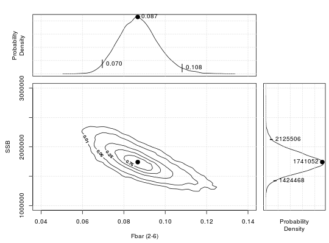
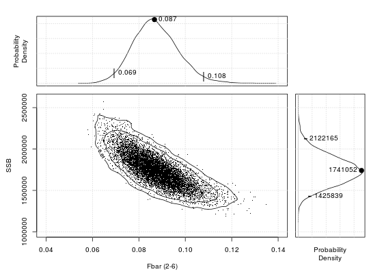

Visualise uncertainity in the terminal Fbar and SSB
Generates and visualises the two-dimensional confidence interval from a stock assessment based on a parametric bootstrapping exercise.
otolith(object, year=sam@range["maxyear"], plot=TRUE, show.points=FALSE, do.contours=TRUE, margin.plots=TRUE, show.estimate=TRUE,xlim="missing", ylim="missing",n=100, pch=".", alpha=0.05, show.grid=TRUE, n.grid=50, contour.args=list(),...)
Arguments
- object
- An FLSAM object upon which the stock assessment is based.
- year
- Year the otolith is based upon.
- plot
- Boolean. Whether the plot should be generated or whether or not.
- show.points
- Boolean. Show the individual point generated by the parametric bootstrap.
- do.contours
- Boolean. Generate contours showing the confidence intervals in the two dimensions.
- margin.plots
- Boolean. Generate horizontal and vertical plots to the sides of the main plot showing the 1-D confidence intervals.
- show.estimate
- Boolean. Show the point estimate generated by the assessment.
- xlim, ylim
- Two element numeric vectors giving the axis limits for the x- and y- axes respectively.
- n
- The number of individual parametric bootstrap values to generate.
- pch
- The symbol used to plot the individual points. See
pointsfor more information. - alpha
- The confidence interval plotted in the margin plots. Defaults to 0.05 (95%).
- show.grid
- Boolean. Display a grid in the background.
- n.grid
- The density of the grid used to generate the two-dimensional uncertainty surface which the contours characterise. The default value of 50 works well for most applications, although it can be increased if the number of bootstrap estimates is also increased.
- contour.args
- A list of arguments suitable for use in the
contourfunction controlling the formatting of the contour lines. - ...
- Other arguments suitable to be feed to the standard
plotfunction.
Details
The function might become very slow when a large number of n is required while the variance-co-variance matrix is large.
See also
sprintf, options
Examples
#Load assessment objects data(NSH.sam) otolith(NSH.sam,year=2010,n=150) otolith(NSH.sam,year=2010,n=1e4)otolith(NSH.sam,year=2010,n=1e4,show.points=TRUE)